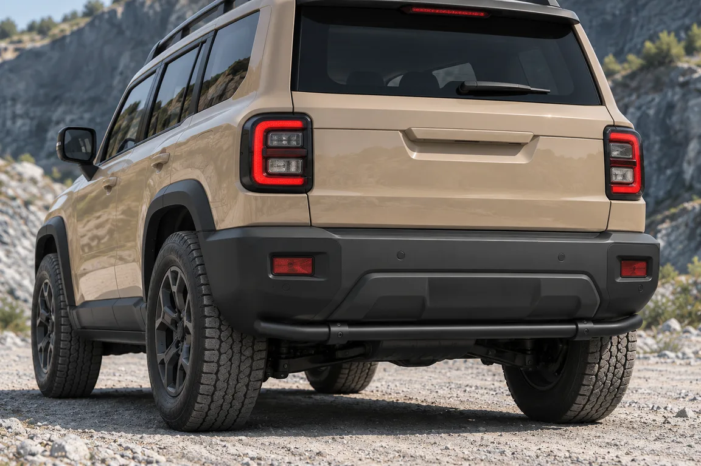

Автомобильные сайты
- Первый экран студии детейлинга. Detailing Studio на Pinterest
- Подача внедорожника как главного визуального объекта. EZ Outdoors на Behance
- Каталог защиты и привязка аксессуара к автомобилю. Каталог ARB
Тёмно-синий фон объединяет первый экран, каталог и подвал. Бордовый выделяет основные действия. Для заголовков и основного текста используется Oswald.
В каталогах есть фотографии и артикулы серийных изделий. Год, комплектацию автомобиля и наличие выбранного исполнения проверяйте у производителя.
Для своего ролика можно начать с общего плана автомобиля, затем показать поверхность трубы, крепление и общий вид после установки.
INEOS Grenadier · Built For More
JAC T9 How To — примеры коротких объясняющих роликов по автомобилю.
Геометрию и крепление серийного изделия проверяйте по фото и артикулу производителя.
 Передняя защита пикапа
Передняя защита пикапа
Задняя защита внедорожника Отделка
Отделка